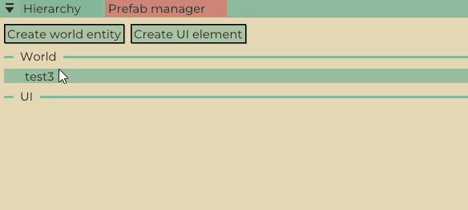
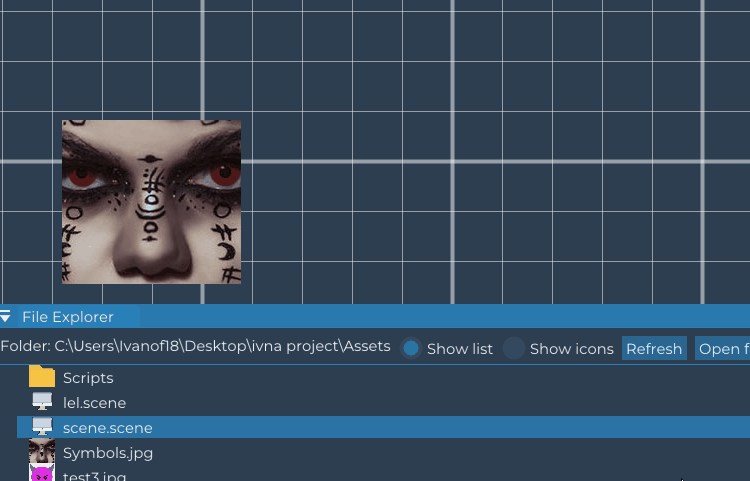

Introduction
Learn what is ShyEngine and understand the fundamental controls and content.
What is ShyEngine?
ShyEngine is a self-suficient 2D game engine with an integrated editor and node-based visual programming. With the editor, our goal is to make the development process comfortable, smooth, and visually-oriented, eliminating the need for developers to communicate with the engine through programming. That is achieved thanks to our node-based visual programming system.
Exploring the scene
The scene is the window responsible for presenting the developer with the entities in the scene. The scene can ve navigated with some basic controls:
Select entity
Click on an entity and it will become selected.

Rotate entity
Shift + Click on entity + Drag to rotate the entity. This will affect children entities.

Scale entity
Alt + Click on entity + Drag to scale the entity horizontally and vertically. This will affect children entities.

Scale maintining scale ratio
Alt + Ctrl + Click on entity + Drag to scale the entity without losing its scale ratio. This will affect children entities.

Move entity
Click on entity + Drag to move the entity in the scene. This will affect children entities.

Center camera
Click on entity + Space centers the camera on the selected entity.

Move camera
Mouse Wheel Down and drag the mouse to move the camera.

Zoom camera
Mouse Wheel Scroll to zoom in and out.

Save scene
Ctrl + S to save the scene inside the Assets folder.
Hierarchy
The hierarchy is the window responsible for displaying a list of entities and overlays, as well as options for renaming, deleting, creating prefabs, or establishing parent-child relationships among them. Further ahead are the various options and possibilities of the hierarchy:
Entities representation
The entities are represented as white text, but there can be special cases. For instance, entities with a relationship are shown with different indentation and prefabs have a different text color.

Empty entity creation
Empty entities can be created by clicking on the top of the window buttons.

Creating prefabs, adding scripts, renaming and deleting entities
In order to open the entity menu and perform the actions of creating prefabs, adding scripts, renaming and deleting entities, an entity must be selected on the hierchy and right click on it in order for the popup to open.
Establishing parent-child relationships
In order edit the relationships between entities, entities must be dragged between them to establish the relationships between them. To delete the relationship of 2 entities, the child entity must be dragged into the parent entity.

Shortcuts
Ctrl + C: copies the selected entity.
Ctrl + X: cuts the selected entity.
Ctrl + V: pastes the copied or cut entity.
Ctrl + D: duplicates the selected entity.
File explorer
The file explorer is responsible for managing the import of assets, their removal, and the creation of entities by draggin them into the scene. Here are some examples of these functionalities:
Importation and deletion of assets
Assets can be imported by dragging them into the file explorer, or by moving them into the corresponding Windows folder and then clicking on refresh. To delete them, the asset can be right clicked to show the Delete popup.

Creating entities
Entities can be created from an image by dragging it from the file explorer onto the scene.

Loading scenes
Scenes are located in the file explorer and can be loaded by double clicking on them.
